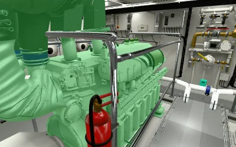
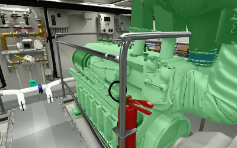

56 objetos con identidad propia. Clic o toque selecciona; volver a pulsar, pulsar fuera o Escape elimina la selección. Arrastrar conserva la caminata y el giro.
Verde #32E65A al 35 %, sin cambiar opacidad ni mostrar superficies ocultas. Las barandillas, extintores, reductoras, suelo y estructuras tienen identidad separada del motor.


149 comprobaciones de objetos en 14 vistas; cero píxeles modificados fuera de sus máscaras. La deselección restaura imágenes idénticas desde la misma cámara. Se verificaron corte, reproducción, filtros extraídos, teclado, toque, cancelación, cambios de zona, estabilidad de recursos y recuperación del contexto gráfico.
283 componentes de conducción, soporte compartido o pertenencia no confirmada permanecen sin tinte. El catálogo detalla las asignaciones; no se agrupan piezas por proximidad ni por material.
Los GLB, texturas y bakes anteriores permanecen intactos, al igual que los 629 archivos originales. La pasada de identificación se ejecuta al pulsar; el recorrido ordinario mantiene el dibujo bajo demanda. Las comprobaciones gráficas utilizan Chromium/SwiftShader y no acreditan FPS en una GPU física.